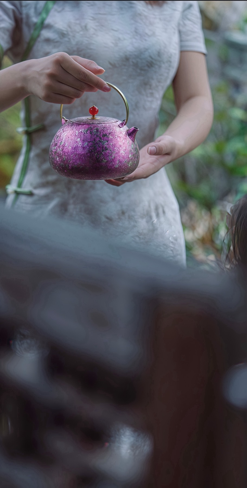

Our Story
在繁忙的生活节奏中，我们开始重新思考，什么才是真正重要的生活。或许，不是越多越好，而是回归简单、安心与健康，让每天的饮食与日常，都能自在而美好。「易善美」因此而诞生。
易善美，代表著用最简单的方式，达到尽善尽美。我们相信，健康的生活不一定复杂，真正的美丽，也来自内在的安心与纯粹。
因此，我们专注于安心健康的钛器（壶）与生活用品。钛，纯净、轻盈、耐用、不易释放杂质，象征著自然、健康与长久陪伴的生活态度。从一只钛壶、一件器皿，到每一次饮食体验，易善美希望带来的不只是产品，而是一种更简单、更健康、更有温度的生活方式。
我们相信，当生活回归纯粹，就能活出真正的健康与美丽。易善美，坚持每一份细节，每一次选择，都能让人感受到安心、舒适与质感——因为对我们而言，最好的生活，就是在简单之中，找到属于自己的尽善尽美。
Official Distributor
易善美荣获博友制钛（Boyu Titanium）正式授权，成为台湾总代理。我们致力于将荣获多项国际设计奖肯定的钛金属工艺作品引进台湾，让纯钛茶器不仅是一件器物，更是一种融合健康、安全、工艺与生活美学的品味象征。以专业服务为基础，以精品选物为核心，为台湾市场提供原厂正品、完善售后与品牌级体验。
我们重视的不只是产品本身，更是在每一次使用时所带来的感受。从产品挑选、品牌合作、品质把关，到售后服务与使用体验，我们希望让每一位接触博友制钛的人，都能真正感受到钛金属器物的细腻与价值。未来，我们也将持续推广钛金属茶器文化，与更多茶空间、选物店与生活品牌合作，让更多人认识这份来自工艺与材质本质的美好。
坚持安心健康的钛器选择。
减少繁复，回归生活本质。
来自健康、平衡与内在的自在。
重视每一个细节。